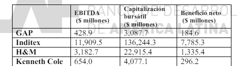

Este método se basa en la idea de que se puede estimar el valor de una empresa comparándola con otras empresas similares cuyos valores ya están determinados por el mercado. Se parte del principio de que si dos empresas son similares en aspectos fundamentales como tamaño, sector, y rendimiento financiero, entonces sus valores de mercado también deberían ser similares. Este enfoque simplifica enormemente el proceso de valoración, evitando los cálculos complejos de flujos de caja futuros y las incertidumbres asociadas con ellos.
El proceso comienza identificando un conjunto de empresas comparables (comps). Estas empresas deben ser lo más similares posible a la empresa objetivo en términos de sector, tamaño, y operaciones financieras. Luego se seleccionan los múltiplos financieros apropiados, tales como el ratio precio-ganancias (P/E), valor de empresa a EBITDA (EV/EBITDA), o precio-ventas (P/S), que son comúnmente usados para comparar las empresas. Estos múltiplos se aplican luego a las métricas correspondientes de la empresa objetivo para estimar su valor.
La elección de las empresas comparables y los múltiplos correctos es crucial y puede ser compleja. Se deben considerar factores como la representatividad de los múltiplos seleccionados y la disponibilidad de datos financieros comparables y actualizados. Además, el número de empresas comparables seleccionadas puede afectar la precisión del múltiplo medio; generalmente, se recomienda un rango de 4 a 8 empresas para equilibrar la precisión y la representatividad.
La principal ventaja de este método es su simplicidad y rapidez, lo que permite a los analistas obtener una estimación de valor sin la necesidad de proyecciones financieras complejas. Sin embargo, tiene limitaciones importantes, como la dificultad para ajustar las diferencias entre las empresas comparables y la empresa objetivo, y la posibilidad de que los múltiplos sean afectados por condiciones de mercado atípicas.
Una vez calculado el valor de una empresa mediante comparables, se pueden tomar decisiones de inversión comparando este valor con el precio de mercado actual de las acciones. Si el valor estimado es mayor que el precio de mercado, podría indicar una oportunidad de compra; si es menor, podría sugerir una venta. Además, los múltiplos pueden servir de benchmark para evaluar el rendimiento de la empresa en comparación con el sector o el mercado en general.
Además del método basado en empresas comparables, también se puede utilizar el método de múltiplos históricos, que evalúa el valor de una empresa basándose en sus propios múltiplos financieros históricos. Este enfoque supone que las condiciones que influyeron en el valor de la empresa en el pasado continuarán haciéndolo en el futuro, a menos que haya habido cambios significativos en su operativa o en el mercado.
El documento también proporciona ejemplos prácticos de cómo aplicar múltiplos para valorar empresas reales. Este segmento ayuda a ilustrar el proceso de selección de múltiplos adecuados y cómo aplicarlos a situaciones reales, demostrando cómo los múltiplos como P/E, EV/EBITDA, y P/S se usan para calcular el valor de mercado de una empresa basándose en sus operaciones y comparaciones con otras empresas del mismo sector. Además, se discuten las técnicas para ajustar y refinar la selección de múltiplos basados en condiciones específicas del mercado y características particulares de la empresa objetivo.
En la siguiente tabla hay una versión (limitada) de datos de empresas del sector textil:
Encuentra dos valoraciones basadas en comparables para las acciones de Mango, una empresa no cotizada también perteneciente al sector textil. Sabemos que Mango tiene EBIT de $1,500 millones, depreciación y amortización de $300 millones y beneficio neto de $900 millones. La equity de Mango está compuesta de 260 millones de acciones.
Los dos ratios comparables que podemos calcular con los datos proporcionados son P/EBITDA por acción y P/E. La única puntualización es que P/EBITDA no es muy comúnmente utilizado como ratio, pero esto nos permite decir a los estudiantes que los ratios pueden usarse con flexibilidad, siempre que se construyan de forma correcta (una medida de valor en el numerador, una medida de actividad / contable en el denominador).
Los ratios medios son P/EBITDA medio = 8.02 y P/E medio = 16.29. Aplicando estos ratios a Mango, que tiene EBITDA(por acción) de ($1,500+$300)/260 = $6.92 y EPS de ($900/260) = $3.46, obtenemos: